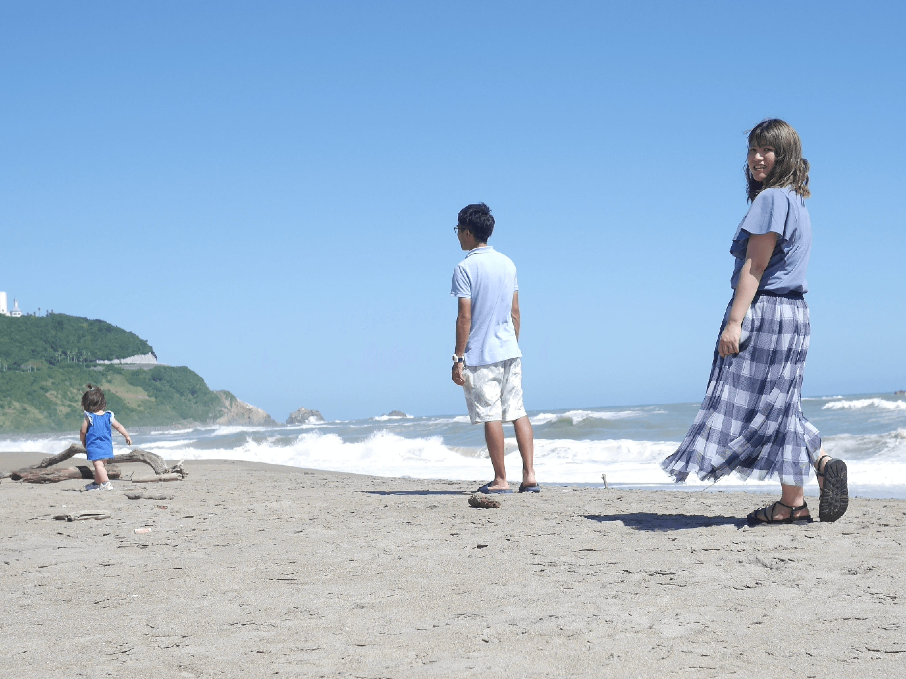

わたしについて＋
興味をもっていただけたら嬉しいです
- 岩井佑明のプロフィール
-
平成７年７月７日生まれ、愛知県三河地方出身で、１歳の娘を育児中です。
娘は、超が付くほどのおてんば娘で、転んでも泣きません。中学では吹奏楽部、高校ではソフト部、大学では空手部に所属していました。
大学の専攻は文学部で、現在は育休中ですが、教える系の仕事をしています。

- 好奇心旺盛
- 新しいことを学ぶことや、他人がやっていないことに挑戦することが大好きです。 ZeroPlusで習ったことを活用することはもちろん、最近では、簡単なサイトのコーディングでSCSSを使ってみたり、clamp、aspect-ratio、javascriptなどZeroPlusではまだ習っていないことにも積極的に挑戦しています。
- やるときめたことに全力
- 小さいころから習っていた空手ですが、最初から好きだったわけではありません。 むしろ大嫌いでした。黒帯の試験になかなか受からず、様々な道場に出稽古をしましたがそれでも受からず。しかしあきらめませんでした。黒帯が欲しい。 その一心で、道場を変え、週３回の練習にも耐え、手に入れた黒帯は特別なものでした。
- ずっと忘れたくないこと
-
①どんな案件でも、真摯に対応し、今私ができるベストを尽くすこと。
②とにかく実績を積んで、進化していくこと。
③新しいことをどんどん吸収して、使用していくこと。
④勉強のための勉強ではなく、案件に取り組んだり、責任をもったお仕事をするための勉強だということ。